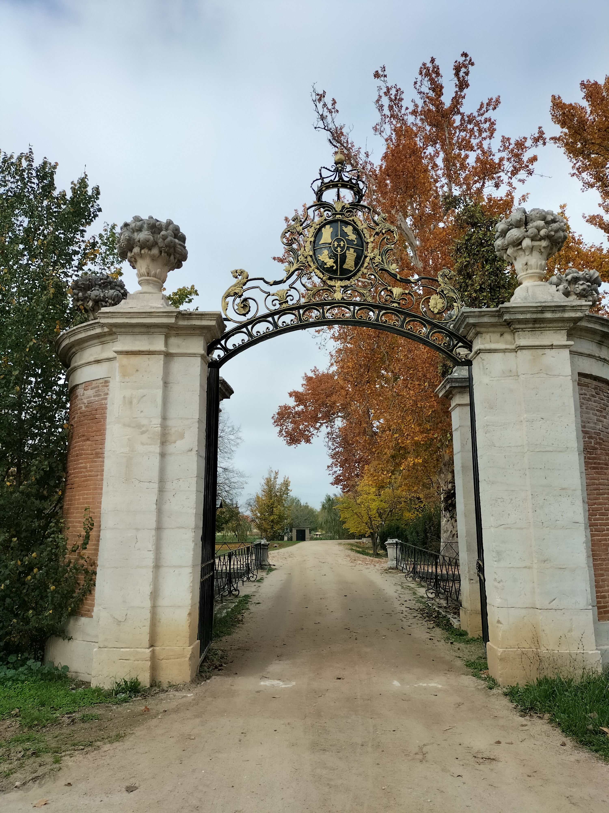

El Mirador del Culón, que se encuentra al final del Jardín de la Isla, es una zona elevada que permite una vista panorámica del Río Tajo en el tramo que abandona la zona de los Jardines y Palacio. También puede apreciarse la unión de las dos vertientes del río que proceden de la división en la Presa de Palacio. Aquí, comienza un tramo que se irá tornando mas salvaje según avance y en el que con suerte y buena vista, en alguna estación del año, se puede apreciar algo de fauna salvaje.
